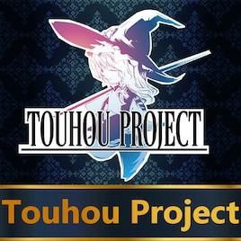

游戏模组：Justinianus/sandbox/Touhou Universalis
| 东方风云 | |
|---|---|
 | |
| LOGO | |
| 类型 | 虚构内容 |
| 作者 | Comrade Flan |
| 版本 | 5月8日上午7:19 |
| 论坛/贴吧 | |
| STEAM创意工坊 | 1537902566 |
{kind=link}
东方风云是一款虚构内容模组，其在太平洋西部增添了新的大陆幻想乡，并添加了有关幻想乡诸国的大量任务树、事件、决议、理念。本mod还以幻想乡大陆上的国家添加了一些特殊机制，如异变、弹幕战等。
模组简介
幻想乡
本模组将东方project中的世界观幻想乡加入到了游戏中，表现为在太平洋上出现的新大陆。游戏中，幻想乡总共拥有380个省份、极其富裕的发展度（开局共有5256点），以及五十余个以东方project中的角色/势力为原型的国家。同时，本模组还对思潮相关设定进行了调整，使得其可以在幻想乡被触发。（实战中思潮基本一定会全部刷在幻想乡）现版本也加入了可以阻止思潮在幻想乡诞生、降低幻想乡地区省份发展度等增加游戏难度的决议。
宗教
博丽神道
博丽神道是一个对你所熟知的被真实信仰着的神道教进行了莫大修正的宗教，在数百年来由生活在幻想乡的人类和妖怪共同的着色，她已经形成了和原典相比不一样的传统。
博丽神道拥有与 印度教相似的神祇系统，每一个可以为国家带来两种修正。与印度教不同的是，由于幻想乡地区国家的君主大多有永生者特质（即不太可能因为君主死亡而更换神祇），本模组为之添加了一个定期触发的事件，使玩家可以切换目前选择的神祇，或者维持不变。
印度教相似的神祇系统，每一个可以为国家带来两种修正。与印度教不同的是，由于幻想乡地区国家的君主大多有永生者特质（即不太可能因为君主死亡而更换神祇），本模组为之添加了一个定期触发的事件，使玩家可以切换目前选择的神祇，或者维持不变。
博丽神道所带来的修正：
 +2正统信仰容忍度
+2正统信仰容忍度 +2异端容忍度
+2异端容忍度 +10%陆军火力伤害
+10%陆军火力伤害 -10%所受火力伤害
-10%所受火力伤害 +10%本地贸易竞争力
+10%本地贸易竞争力 +20%本地商品产出
+20%本地商品产出 -1%本地传教强度
-1%本地传教强度
守矢神道
守矢神道是对博丽神道的反向改革。就像她的对手那样，守矢神道同样注重对幻想乡诸神的崇拜，但非泛神崇拜。现在的守矢神道更多地选择集中精力来崇拜个别神明。
守矢神道同样拥有神祇系统，但其与博丽神道的神祇系统有些许不同。守矢神道只允许从三位神祇中选择崇拜其实就是守矢三人组，而神祇提供的修正也更加强力。守矢神道同样提供定期更换神明的事件。
守矢神道所带来的修正：
- +2正统信仰容忍度
- +2异端容忍度
- +10%陆军火力伤害
- -10%所受火力伤害
- +10%本地贸易竞争力
- +20%本地商品产出
- -1%本地传教强度
东派道教
东方系列里的道教是一个对你所熟知的被真实信仰着的道教进行了莫大修正的宗教。在数百年来由生活在幻想乡的人类和妖怪共同的着色，她已经形成了和原典相比不一样的传统。她是由丰聪耳神子传播过来的，其通过对道教的研习实现了永生。
东派道教拥有与 改革宗相似的宗教热情与焦点系统。
改革宗相似的宗教热情与焦点系统。
详见：基督教#热情
东派道教所带来的修正：
- +2异端容忍度
 +2每月热情
+2每月热情- +10%陆军火力伤害
- -10%所受火力伤害
- +10%本地贸易竞争力
- +20%本地商品产出
- -1%本地传教强度
东乘佛教
东方系列里的佛教是一个对你所熟知的被真实信仰着的佛教进行了莫大修正的宗教。它由一位名叫白莲又被称为“妖怪的圣人”的僧侣所领导，她认为人类与妖怪之间可以和平相处并且为之努力。
东乘佛教拥有与 儒教相似的和谐度与宗教融合机制。
儒教相似的和谐度与宗教融合机制。
详见：东方宗教#和谐度
东乘佛教所带来的修正：
- +3异端容忍度
 +1每年和谐度增长
+1每年和谐度增长- +10%陆军火力伤害
- -10%所受火力伤害
- +10%本地贸易竞争力
- +20%本地商品产出
- -1%本地传教强度
东方宗
东方宗与欧洲的基督教相去甚远，并且体现有幻想乡神道的某些方面。其起源与年代均不得而知，不过可以肯定的是：随着梦美抵达到了幻想乡，东方宗的信徒们也寻得了前往幻想乡的方式。
这种宗教的信徒往往是好奇心十足，这也是他们满世界的去各式各样的圣地朝圣的原因。
这种宗教的信徒往往是好奇心十足，这也是他们满世界的去各式各样的圣地朝圣的原因。
东方宗拥有与 科普特正教相似的圣地和祝福机制。
科普特正教相似的圣地和祝福机制。
特色
- 出现在太平洋上的幻想乡大陆
- 8种新的幻想乡宗教及其充实的系统机制以及为每一位神祗量身打造的多样事件！还有幻想乡独有的文化组
- 总计380个省份、5256的发展度、7个贸易节点及50余个新增国家
- 全部新增的幻想乡国家均有其独特的理念组
- 从灵异传到鬼形兽、再从月球到地底，各组织势力基本均有登场
- 「红魔馆」、「地灵殿」、「博丽家」、「魔法森林」、「迷途之家」、「冥界」、「永远亭」、「藤原家」、「魔界」、「芙兰德斯」、「守矢家」、「太阳花田」、「彼岸」、「三月精」、琪露诺、克劳恩皮丝、莉莉白、拉尔瓦、勇仪、魅魔，这20个国家的完整任务树
- 6次完整的异变事件链：「红雾异变」、「春雪异变」、「永夜异变」、「花映塚异变」、「风神录异变」、「地灵殿异变」；以及推进异变解决的特有手段：「弹幕战」
- 3种新增的兵种组
- 东方相关的载入画面与事件图片
- 数种幻想乡特有的政府类型，以及在这数种类型下的一系列政府改革
- 思潮相关修正，在东亚的幻想乡也能触发了